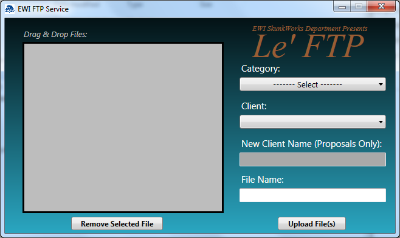
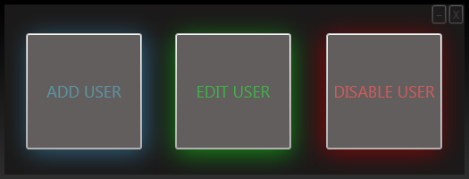
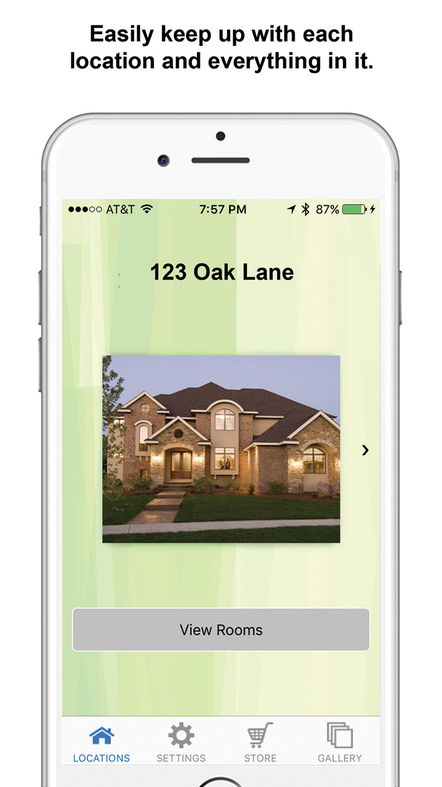
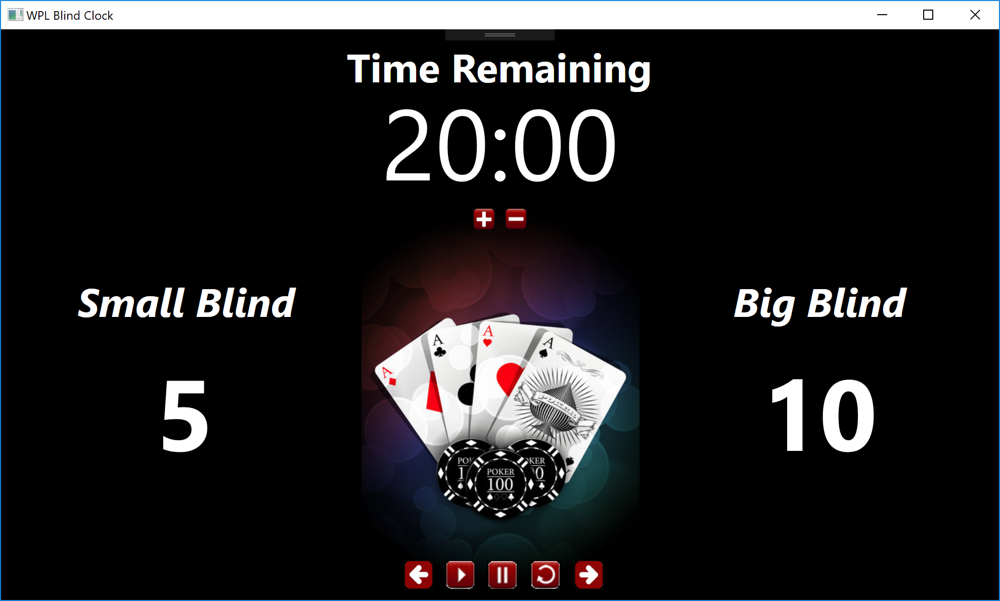

Marc Kolsky's Coding Samples
C# Coding and Design
My Work
Thank you for visiting! Here you will find a small sample collection of my work as a C# developer. I have been developing using C# for 5 years, and dabbled a little in HTML and PHP before that. I utilize a variety of tools in my development including Visual Studio, Xamarin Forms, and SQL Server just to name a few. The code samples below were chosen to showcase the variety in my coding from integrating API’s, communicating with cloud storage solutions, to standard desktop development showcasing my development style of front-end to back-end. I believe in developing solutions that are easy for the front-end user, and utilizing my abilities to code the back-end around that design.
Custom Weather Widget User Control
Description:
Frustrated with the lack of customizations for existing weather forecast widgets, I decided to build my own with a user control in C#. Utilizing a web API from Open Weather, I built a user control to visually display the current weather and 5-day forecast. Using the System.Timers class, I set the control to pull the latest weather information every 15 minutes.
Features
- Large background that changes with the type of weather currently being experience (i.e. Sunny, Cloudy, Raining, Thunderstorms, etc.)
- This code allows for easy changing of location in the web api call. Built for reusability!
- Has the ability to log issues into a simple text file making it easy to detect and resolve issues without interfering with the primary control.
FTP Program

Description:
In response to the need for an FTP service to send large files to clients, this was my first opportunity to build a C# business application. My first FTP program was built in February 2013, and later redesigned in May 2014 with the move to using Amazon’s S3 cloud storage solution. Listening to the users of the application led to many of the changes made. This application significantly simplifies the process of sending large files to clients.
Features
- The large list box allows users to drag and drop multiple files/folders that they wish to send to the client. This simplifies the process, and eliminates the need to go through a pop-up explorer window to find your files. Every file dropped into this list box will be added to a Zip file before being uploaded to the Amazon S3 cloud storage server to create a single file for the customer to download, and reducing the overall size of the upload/download using Zip's built-in compression.
- Several checks are built into this application to make sure no file is overwritten, unless authorized by the user, and organizes the files by client to keep the file structure optimized.
- Once the Zip file is uploaded to the Amazon S3 server, the application creates a new email in Outlook that contains a link for the customer to click and download the Zip file from the Amazon server. The entire process is minimized to create the least amount of work with the greatest amount of benefit for the user.
Active Directory Interface

Description:
At the request of the Network Administrator at EWI, I was tasked with creating an application that would allow HR to add, edit, and delete employees' profiles in Active Directory. Any IT professional will tell you that giving HR access to Active Directory is a bad idea. This application challenged me to find a way to build in flexibility while protecting against unwanted access to Active Directory. The simplicity of this application gives a false impression to the true complexity hiding behind the scenes. This application gives HR the freedom to add/edit/remove employees as needed without needing the IT department involved, but still safe guards Active Directory from unauthorized access.
Features
- To create a new employee profile in Active Directory, the application asks for some basic information from the user (First name, last name, job title, department, etc.). After entering in the required information, the application connects to the server with admin credentials, and then connects to Active Directory. This secure connection operates behind the scenes, and does not give the user any control of Active Directory outside what it's programmed to do. Once a new profile has been created and populated with the information provided by the user, it activates the profile and sets the initial password, and adds the new employee to the appropriate user groups. Then the application connects to the Exchange Server and sets up the new employee's email mailbox using Exchange Powershell. The new employee has been added, and is ready to go.
- If an employee's profile needs to be edited, I have made this a simple operation. Most commonly, when an employee gets married or divorced, their Active Directory profile and Exchange mailbox has to be changed. I have made this an automated process, leaving nothing to get frustrated about. When an employee's name changes, their username is updated, their Exchange mailbox creates a new alias while retain the old aliases, and their user folder (My Documents) on the file server is changed to reflect their new name.
- My favorite part of this application is something never asked for, but I saw the need for it. When an employee is let go, all access to the company's system needs to be revoked. With this application, the process is completed in 3 simple steps. One, the user selects the employee being let go from a combo box. Two, the user selects the employee/manager with whom the email should be redirected too. And three, clicks the disable button. From here the application disables the employees account, resets the password, and removes the employee from subscribed user groups in Active Directory. Then the application connects to the Exchange server and redirects the employees email to the selected recipient, and removes all mailbox privileges so they cannot access email from their phone or on the web. Finally, to protect against unauthorized access by the former employee to his/her computer, the application searches the network to find out which computer the employee is logged into and sends it into hibernation. The computer can then be awaken at a later time by the IT department, logged into with the employee's reset password, and everything will be as it was when put into hibernation.
Destiny API Query
Description:
One of most talked game franchises in the last 3 years is Destiny. With Bungie's latest release of Destiny 2, a reported 1.5 million users were seen playing concurrently. Bungie offers a unique set of API's available to the public making the game even more accessible. This is a script I wrote last year for Destiny to track stats of an event called Iron Banner.
Features:
- Built to pull data from the Destiny servers for members of a single clan. The scripting could be converted to pull data for any/all clan(s) in Destiny with very little coding.
- Built to be dynamic and rely on very few static parameters.
- Queried results are saved into a SQL database to be later queried. Several SQL queries were built to extract the information into set categories (i.e. most kills, deaths, kill ratio, etc.)
Home Central Android/iOS Mobile App

Description:
Home Central is a mobile app built for a customer who envisioned an easier way to track and recall information about your home and the items in it. With the Home Central app you can have details of your home at your fingertip, and readily available when it's needed the most.
Features:
- Home Central allows you to store data for up to 3 locations and starts you with 6 rooms for each location
- An in-app store allows the customer to purchase up to 10 additional rooms for each location.
- Inside each room, Home Central provides 10 categories to store information for, and additional categories for mechanical/utility rooms
- Nearly every page in Home Central allows the customer to add photos to every item.
- Home Central was built using Xamarin Forms which allowed both Android and iOS versions to be built simultaneously.
WPL Poker Blind Clock

Description:
In my spare time I enjoy playing in a poker league with a small group of friends. One evening I decided to develop a poker blind clock that could run on a computer near the poker tables. This application was built using set values for each blind level, and made an audible tone when the blinds went up. Although simple, it was a fun project for some personal enjoyment!